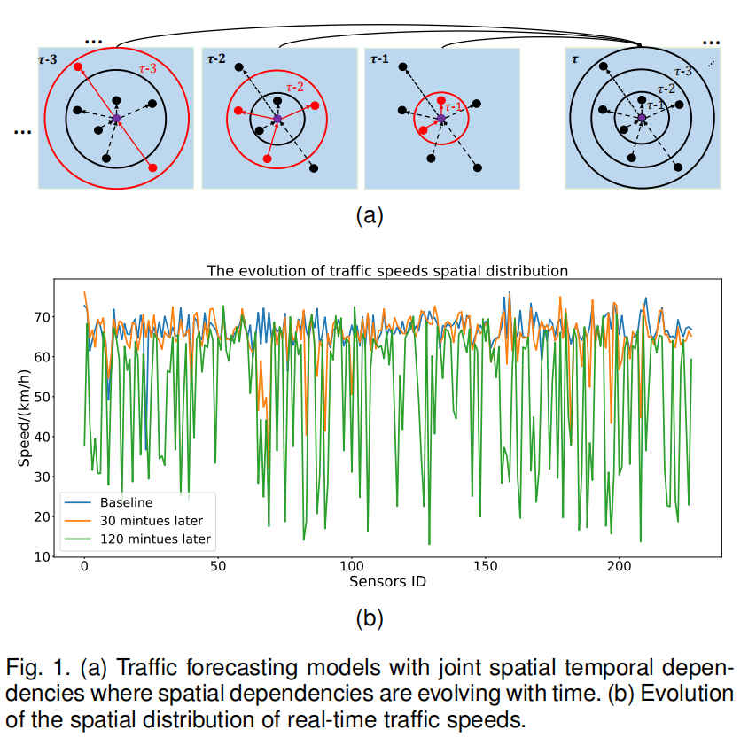
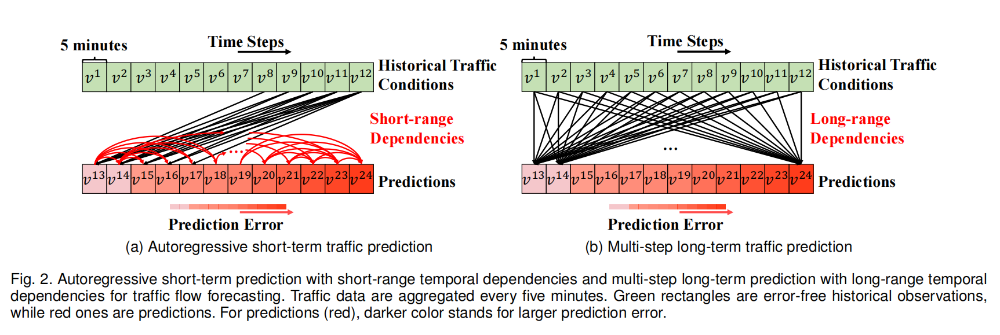
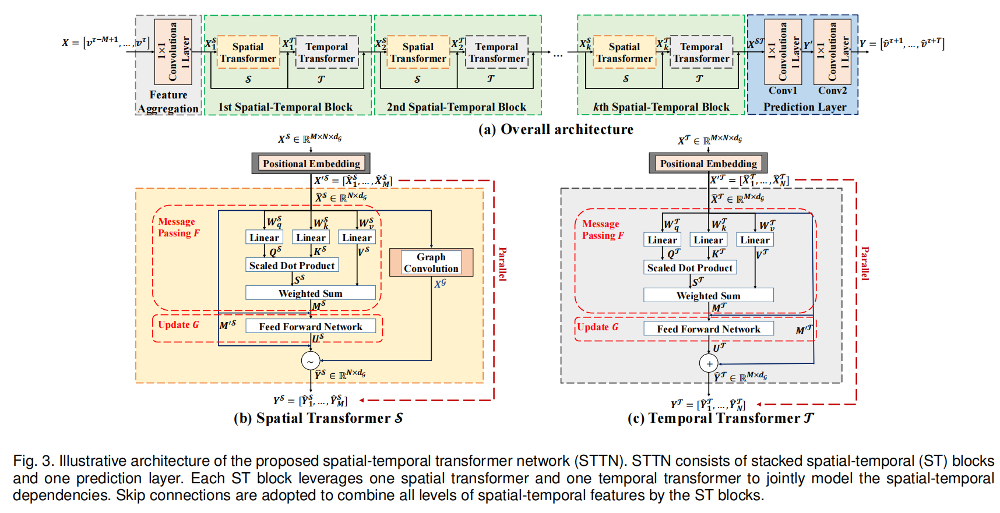
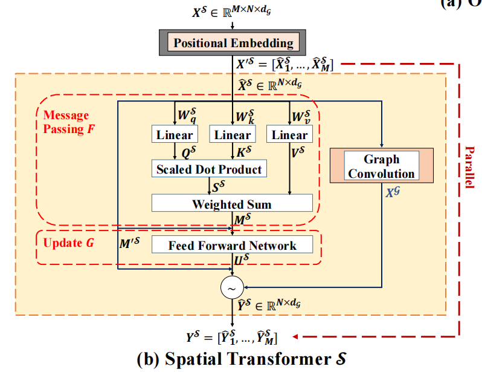
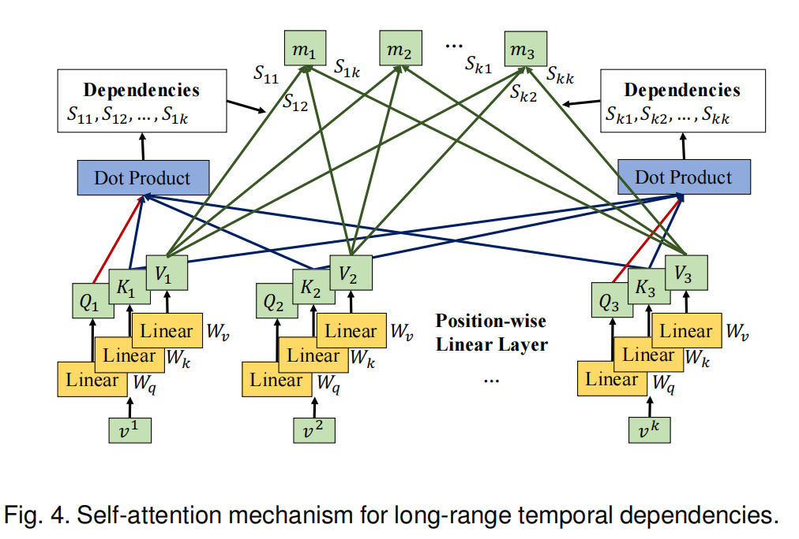
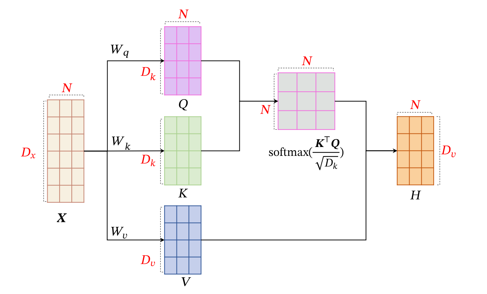
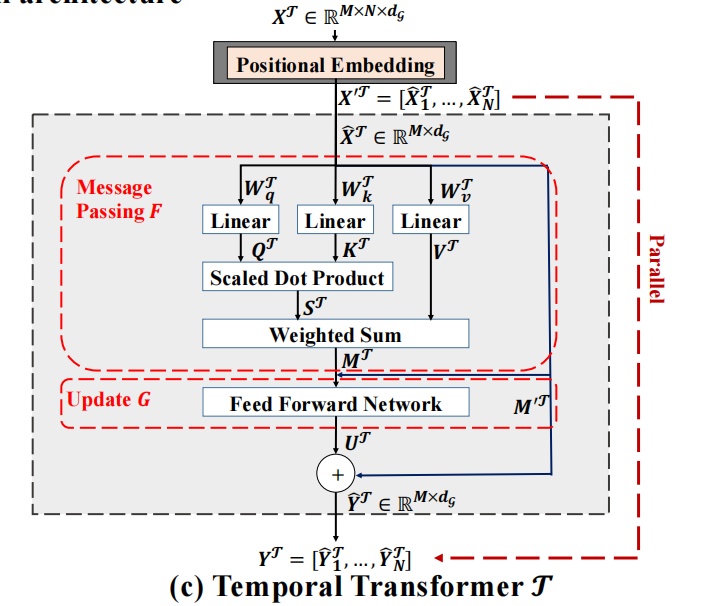
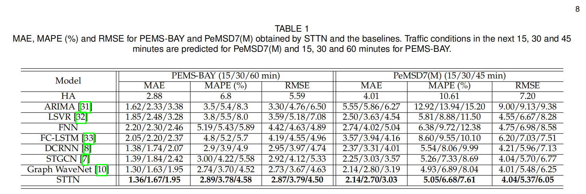
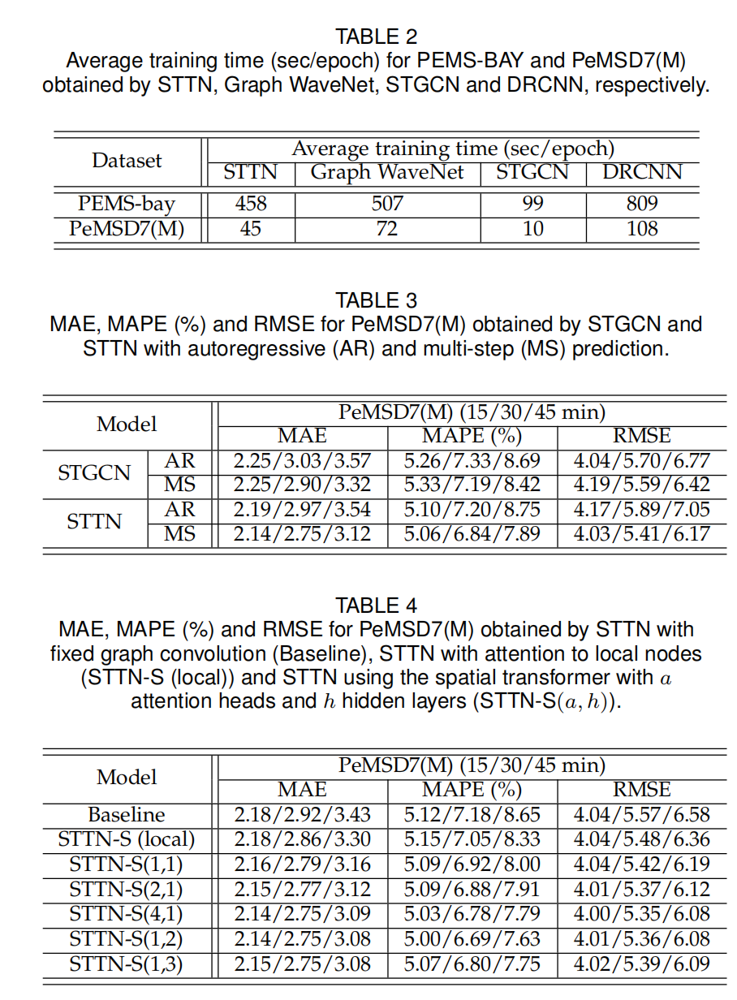
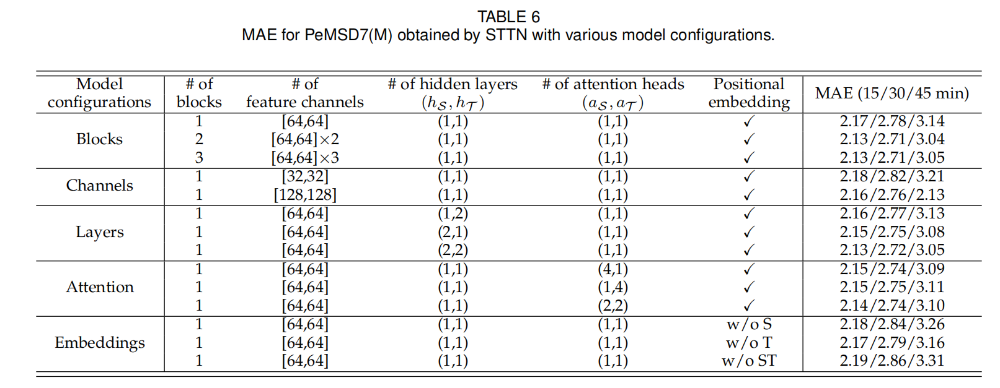

The blog introduces the paper : STTN
Introduction
-
Models with stationary assumption are not practical in long-term forecasting, as traffic flows are highly dynamical in nature.
-
CNN-based and RNN-based models are restricted for traffic forecasting in the following two aspects
-
Fixed Spatial Dependencies
For each sensor, its correlated sensors vary with the forecasting. Fig1(a) shows that for the target node(purple), different correlated nodes(red) are considered to formulate the spatial dependencies for different time steps(e.g. $\tau -1,\tau-2,\tau-3$), according to the range(red circle) determined by the traffic speeds and distances.
Furthermore, it is important to capture the dynamical spatial dependencies. Spatial dependencies irregularly oscillate with time steps, due to the periodical effect of rush hours, varying weather conditions and unexpected occurrence of traffic accidents as shown in Fig1(b).
-
Limited-range Temporal Dependencies
Long-range temporal dependencies are usually ignored in existing methods.Fig1(a) illustrates spatial dependencies with various scales for different time steps, which implies that prediction performance would be degraded by limiting the range of temporal dependencies.
Furthermore, prediction errors would be propagated and accumulated for long-term traffic forecasting with existing auto-regressive methods trained with either individual loss for each time step or joint loss for multiple time steps, as depicted in Fig2(a).

It is desirable to achieve accurate long-term perdicition based on long-range temporal dependencies extarcted form error-free temporal contexts as shown in Fig2(b).
-
-
STTN is proposed to address aforementioned challenges. The contributions of the paper are summarized as below:
- Develop a spatial-temporal block to dynamically
model long-range spatial-temporal dependencies. - Present a new variant of GNNs, named spatial transformer, to model the time-varying directed spatial dependencies and dynamically capture the hidden spatial patterns of traffific flflows.
- Design a temporal transformer to achieve multi-step prediction using long-range temporal dependencies.
- Develop a spatial-temporal block to dynamically
Proposed Model
Formulate the traffic forecasting task as a spatial-temporal prediction problem. The model consists of two main components: spatial-temporal (ST) block and prediction layer.
Problem Formulation
As other traffic network, the model can be respresented as:
$$\hat{v} ^{\tau + 1},…, \hat{v} ^{\tau + T} = \mathcal{F} (v ^{\tau - M +1},…,v ^{\tau}; \mathcal{G})$$
To achieve accurate prediction, $\mathcal{F}$ captures dynamical spatial dependencies $S _\tau ^\mathcal{S} \in \mathbb{R} ^{N \times N}$ and long-range temporal dependencies $S _\tau ^\mathcal{T} \in \mathbb{R} ^{M \times M}$ from $v ^{\tau -M +1},…,v ^\tau$ and $\mathcal{G}$.
Overall Architecture

Spatial-temporal Blocks
As shown in Fig3, the input to the $l$-th spatial-temporal block is a 3-D tensor $X _l ^\mathcal{S} \in \mathbb{R} ^{M \times N \times d _{\mathcal{G}}}$ of $d _{\mathcal{G}}$-dimensional features for the $N$ nodes at time steps $\tau - M +1,…,\tau$ extracted by the $l-1$-th spatial-temporal block. The spatial transformer $\mathcal{S}$ and temporal transformer $\mathcal{T}$ are stacked to generate the 3-D output tensor. Residual connections are adopted to for stable training. In the $l$-th spatial-temporal block, the spatial transformer $\mathcal{S}$ extracts spatial features $Y _l ^\mathcal{S}$ from the input node feature $X _l ^\mathcal{S}$ as well as graph adjacency matrix $A$
$$Y _l ^\mathcal{S} = \mathcal{S} (X _l ^\mathcal{S},A)$$
$Y _l ^\mathcal{S}$ is combined with $X _l ^\mathcal{S}$ to generate the input $X _l ^\mathcal{T}$ to the subsequent temporal transformer
$$Y _l ^\mathcal{T} = \mathcal{T} (X _l ^\mathcal{T})$$
$$X _{l+1} ^{\mathcal{S}} = Y _l ^{\mathcal{T}} + X _l ^{\mathcal{T}}$$
Prediction Layer
The prediction layer leverages two classical convolutional layer to make multi-step prediction based on the spatial-temporal features from the last spatial-temporal block. Its input is a 2-D tensor $X ^{\mathcal{S}\mathcal{T}} \in \mathbb{R} ^{N \times d ^{\mathcal{S} \mathcal{T}}}$ that consists of the $d ^{\mathcal{S} \mathcal{T}}$-dimensional spatial-temporal features of the $N$ nodes for last time step $\tau$. The mulit-setp prediction $Y \in \mathbb{R} ^{N \times T}$ for $T$ future traffic conditions of the $N$ nodes is
$$Y = Conv(Conv(X ^{\mathcal{S} \mathcal{T}}))$$
Mean absolute loss are adopted to train the model
$$L = || Y - Y ^{gt}|| _1$$
where $Y ^{gt} \in \mathbb{R} ^{N \times T}$ is the groundtruth traffic speeds.
Spatial Transformer

The spatial transformer consists of spatial-temporal positional embedding layer, fixed graph convolution layer,dynamical graph convolution layer and gate mechanism for information fusion.
Spatial-Temporal Positional Embedding
The spatial dependencies of two nodes in the graph would be determined by their distances and observed time steps. Transformer cannot capture the spatial (position) and temporal information of observations with the fully connected feed-forward structures.
Thus, the prior positional embedding is to encode the ‘position’ information into the input sequences. Adopt the spatial-temporal positional embedding layer to learn the spatial-temporal embedding into each node feature. The parameter matrices $\hat{D} ^{\mathcal{S} } \in \mathbb{R} ^{N \times N}$ and $\hat{D} ^{\mathcal{T}} \in \mathbb{R} ^{M \times M}$ are the dictionaries.
$\hat{D} ^{\mathcal{S} }$ is initialized with the graph adjacency matrix to consider the connectivity and distance between nodes for modeling spatial dependencies, while $\hat{D} ^{\mathcal{T} }$ is initialized with one-hot time encoding to inject the time step into each node.
$\hat{D} ^{\mathcal{S} }$ and $\hat{D} ^{\mathcal{T} }$are tiled along the spatial and temporal axes to generate $D ^{\mathcal{S}} \in \mathbb{R} ^{M \times N \times N}$ and $D ^{\mathcal{T}} \in \mathbb{R} ^{M \times N \times M}$.Concatenate them as $[X ^{\mathcal{S}},D ^{\mathcal{S}},D ^{\mathcal{T}}]$ and use a $1 \times 1$ convolutional layer $F _t$ to decreases the dimension to $d _\mathcal{G}$
$$X ^{'S} = F _t ([X ^{\mathcal{S}},D ^{\mathcal{S}},D ^{\mathcal{T}}]) \in \mathbb{R} ^{M \times N \times d _\mathcal{G}}$$
Fed the $X ^{'S}$ into the fixed and dynamical graph convolutional layers for spatial feature learning. Since graph convolution operations can be realized in parallel for the $M$ time steps via tensor operations, consider the 2-D tensor $\hat{X} ^S \in \mathbb{R} ^{N \times d _\mathcal{G}}$ of $X ^{'S}$ for arbitrary one time step for brevity.
Fixed Graph Convolutional Layer
Use the graph spectral convolution based on Chebyshev polynomial approximation to capture the stationary spatial dependencies form the road topology.
Extract the structure-aware features:
$$\hat{X} _{:,j} ^\mathcal{G} = \sum _{i=1} ^{d _\mathcal{G}} \sum _{k=0} ^{K} \theta _{ij,k} T _k (\tilde{L}) \hat{X} _{:,i} ^S \quad \forall j=0,…,d _\mathcal{G}$$
where $\hat{X} _{:,j} ^\mathcal{G}$ is the $j$-th channel(column) of $\hat{X} ^\mathcal{G}$ and $\theta _{ij,k}$ is the learned weights. Since $\mathcal{G}$ is constructed based on the physical connectivity and distance between sensors, the stationary spatial dependencies determined by the road topology can be explicity explored through the fixed graph convolutional layer.
Dynamical Graph Convolutional Layer
To capture the time-evolving hidden spatial dependencies, the author proposes a novel dynamical graph convolutional layer to achieve training and modeling in the high-demensional latent subspaces.

Learn the linear mappings that project the input features of each node to the high-dimensional latent subspaces. Then utilize the dynamic nature of self-attention mechanism to address the projected features to efficiently model the dynamical spatial dependencies between node according to the varying graph signals.
The process is as follows:
$$Q ^S = \hat{X} ^S W _q ^S$$
$$K ^S = \hat{X} ^S W _k ^S$$
$$V ^S = \hat{X} ^S W _v ^S$$

$$S ^S = softmax(Q ^S(K ^S) ^T / \sqrt{d _{\mathcal{A}} ^S})$$
$$M ^S = S ^S V ^S$$
It is worth mentioning that multiple patterns of spatial dependencies can be learned with mulit-head attention mechanism by introducing multiple pairs of subsapces.
Furthermore a shared three-layer feed-forward nerual network with nonlinear activation is applied on each node:
$$U ^S = ReLu(ReLu(\hat{M} ^{'S}W _0 ^S)W _1 ^S)W _2 ^S$$
where $M ^{'S} = \hat{X} ^{S} + M ^{S}$ is the residual connections.
$U ^S$ and $M ^{'S}$ are combined by $\hat{Y} ^S = U ^S +M ^{'S}$ for feature fusion with the gate mechanism
Gate Mechanism for Feature Fusion
The gate mechanism is developed to fuse the spatial features learned from fifixed and dynamical graph convolutional layers. The gate $g$ is derived from $Y ^{'S}$and $X ^S$of the fixed and dynamical graph convolutional layers.
$$g = sigmoid(f _S (\hat{Y} ^S) + f _\mathcal{G}(X ^\mathcal{G}))$$
where $f _\mathcal{G}$ and $f _S$ are linear projections that transform $Y ^{'S}$ and $X ^\mathcal{G}$ into 1-D vectors
$$Y ^{'S} = g\hat{Y} ^S + (1-g)X ^\mathcal{G}$$
General Dynamical Graph Neural Networks
The spatial transformer can be viewed as a general message-passing dynamical graph neural network.
The author demonstrates that the spatial transformer can be formulated as an iterative feature learning process of message passing and update for all the nodes $v \in \mathcal{V}$ in a dynamical graph neural network.
Denote $x _v \in \mathbb{R} ^{d _\mathcal{G}}$ the input features of node $v$. For arbitrary $v \in \mathcal{V}$ ,it receives the message $m _v \in \mathbb{R} ^{d _\mathcal{G}}$ from the nodes in $\mathcal{V}$
$$m _v = \sum _{u \in \mathcal{V}} F(x _v,x _u) = \sum _{u \in \mathcal{V}} \langle (W _q ^S) ^T x _v,(W _k ^S) ^T x _u \rangle x _u$$
where $F$ is the composite message-passing function that realizes Eqs. When $m _v$ is obtained, $x _v$ is updated with $y _v$ calculated from $m _v$ and $x _v$
$$y _v = G (m _v,x _v)$$
where $G$ is the shared position-wise feed forward network.
Temporal Transformers

Similar to the spatial transformer, $X ^{’ \mathcal{T}} = G _t ([X ^\mathcal{T},D ^\mathcal{T}]) \in \mathbb{R} ^{M \times N \times d _\mathcal{G}}$ is obtained from the concatenation of the input features $X ^\mathcal{T} = X ^S + Y ^S \in \mathbb{R} ^{M \times N \times d _\mathcal{G}}$ and the temporal embedding $D ^\mathcal{T}$ ,where $G _t$ is a $1 \times 1$ convolutional layer that yields a $d _\mathcal{G}$-dimension vector for each node at each time step. Parallelize over the nodes to model temporal dependencies. The 2-D tensor of spatial features $\hat{X} ^\mathcal{T} \in \mathbb{R} ^{M \times d _\mathcal{G}}$is considered for arbitrary one node in $\mathcal{G}$.
The process is as follows:
$$Q ^\mathcal{T} = \hat{X} ^\mathcal{T} W _q ^\mathcal{T}$$
$$K ^\mathcal{T} = \hat{X} ^\mathcal{T} W _k ^\mathcal{T}$$
$$V ^\mathcal{T} = \hat{X} ^\mathcal{T} W _v ^\mathcal{T}$$
$$S ^\mathcal{T} = softmax(Q ^\mathcal{T}(K ^\mathcal{T}) ^T / \sqrt{d _{\mathcal{A}} ^\mathcal{T}})$$
$$M ^\mathcal{T} = S ^\mathcal{T} V ^\mathcal{T}$$
$$U ^\mathcal{T} = ReLu(ReLu(\hat{M} ^{'\mathcal{T}}W _0 ^\mathcal{T})W _1 ^\mathcal{T})W _2 ^\mathcal{T}$$
where $M ^{'\mathcal{T}} = \hat{X} ^{\mathcal{T}} + M ^{\mathcal{T}}$ is the residual connections.
For each node, its output is $\hat{Y} ^\mathcal{T} = U ^\mathcal{T} + M ^\mathcal{'T}$
Experiments



The paper
If you like this blog or find it useful for you, you are welcome to comment on it. You are also welcome to share this blog, so that more people can participate in it. If the images used in the blog infringe your copyright, please contact the author to delete them. Thank you !